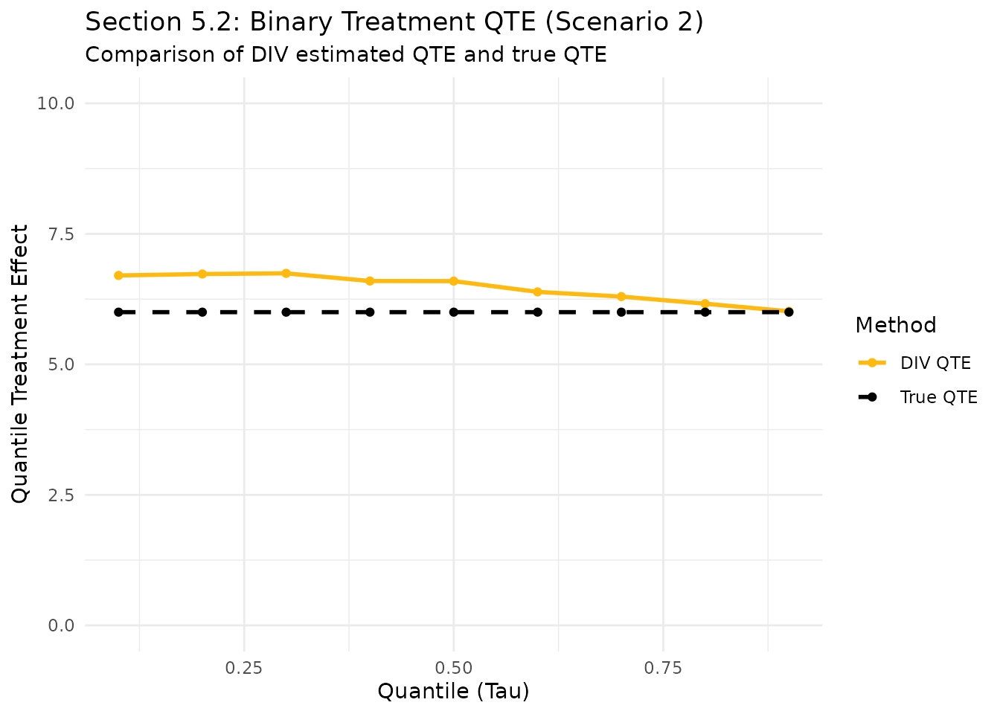

Introduction
In Section 5.2 of the paper, we explore the performance of DIV in settings with a binary treatment variable. This is a common scenario in causal inference, where the goal is often to estimate the Quantile Treatment Effect (QTE). DIV’s ability to model the full interventional distribution makes it particularly well-suited for this task.
Data Generating Process
Following Scenario 2 from Section 5.2 of the paper: - mutually independent. - -
For binary , the expression simplifies to . Thus, the outcome model is:
The true Quantile Treatment Effect (QTE) in this case is a constant 6 across all quantiles.
set.seed(42)
n <- 2000
Z <- rlogis(n)
H <- rlogis(n)
eps_D <- rlogis(n)
D <- as.numeric(4 * Z + 4 * H > eps_D)
eps_Y <- rlogis(n)
# Scenario 2 from paper
Y <- 2 + (D + 1)^2 + 3 * (D + 1) + 2 * H + eps_Y
df <- data.frame(Z=Z, D=D, Y=Y)Fit divR Model
We train the model for 3,000 epochs to ensure convergence of the interventional distribution.
Quantile Treatment Effect (QTE)
The QTE is defined as the difference between the -quantiles of the interventional distributions:
We use 5,000 samples from the generator to produce a smooth estimate of the quantiles.
taus <- seq(0.1, 0.9, by = 0.1)
# Predict quantiles for do(D=0) and do(D=1)
q0 <- predict(model, Xtest = matrix(0, nrow=1), type = "quantile", quantiles = taus, nsample = 5000)
q1 <- predict(model, Xtest = matrix(1, nrow=1), type = "quantile", quantiles = taus, nsample = 5000)
qte_pred <- q1 - q0
# True QTE via large-scale simulation (Oracle)
n_oracle <- 50000
H_oracle <- rlogis(n_oracle)
eps_Y_oracle <- rlogis(n_oracle)
Y0_oracle <- 6 + 2 * H_oracle + eps_Y_oracle
Y1_oracle <- 12 + 2 * H_oracle + eps_Y_oracle
q0_true <- quantile(Y0_oracle, taus)
q1_true <- quantile(Y1_oracle, taus)
qte_true <- q1_true - q0_true
plot_df <- data.frame(
Tau = taus,
Estimated = as.vector(qte_pred),
True = as.vector(qte_true)
)
ggplot(plot_df, aes(x = Tau)) +
geom_line(aes(y = Estimated, color = "DIV QTE"), linewidth = 1) +
geom_point(aes(y = Estimated, color = "DIV QTE")) +
geom_line(aes(y = True, color = "True QTE"), linetype = "dashed", linewidth = 1) +
geom_point(aes(y = True, color = "True QTE")) +
scale_color_manual(values = c("DIV QTE" = "darkgoldenrod1", "True QTE" = "black")) +
ylim(0, 10) +
labs(title = "Section 5.2: Binary Treatment QTE (Scenario 2)",
subtitle = "Comparison of DIV estimated QTE and true QTE",
x = "Quantile (Tau)", y = "Quantile Treatment Effect",
color = "Method") +
theme_minimal()
Conclusion
By switching to Scenario 2 and increasing the number of training epochs and prediction samples, we obtain an estimate that is very close to the true causal effect of 6. This demonstrates that DIV can successfully recover causal effects even in discrete treatment settings, provided the model is given sufficient training time and sampling resolution.